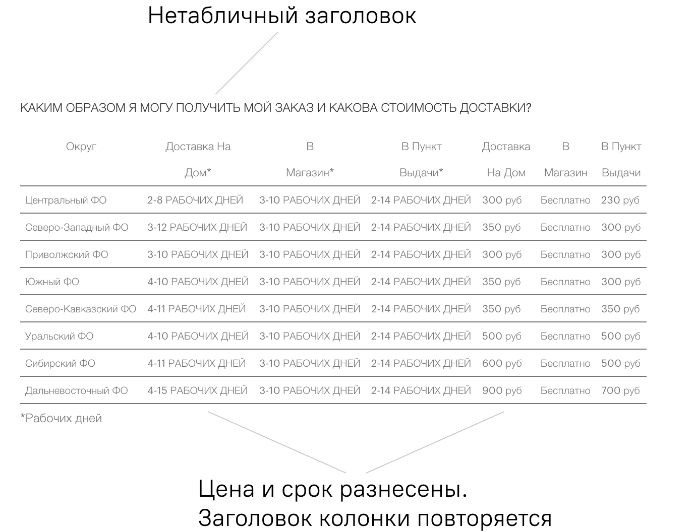
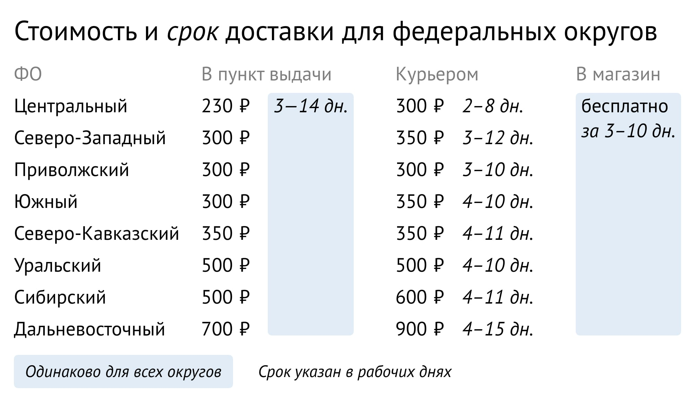

Переверстка таблицы про доставку
 Подробный разбор на ютубе
Подробный разбор на ютубе
Изначальная таблица и ее проблемы
Таблица нужна, чтобы человек из конкретного региона сравнил разные способы доставки. Но сейчас это сделать трудно, информацию об условиях доставки приходится искать в левой и правой частях таблицы. Если хочется сравнить разные способы доставки, то так придется сделать три раза — по разу на каждый способ.
Моя таблица и решение проблем
Сгруппировал инфомацию, у таблицы появилась четкая структура. Теперь с первого взгляда понятно, что таблица хочет сказать. Остается только сравнить колонки.